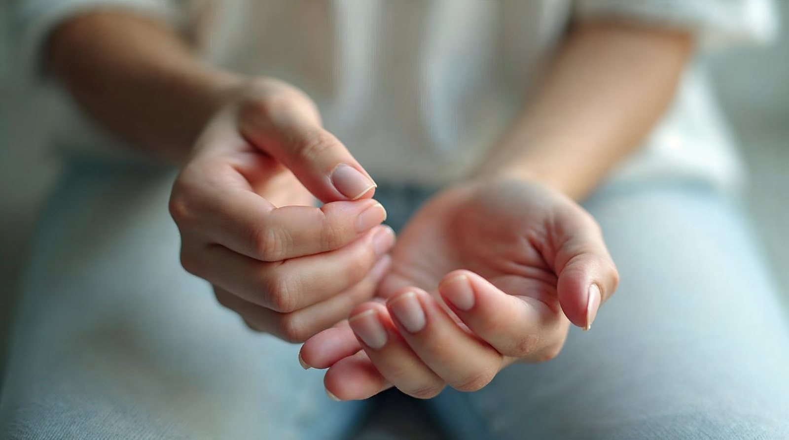
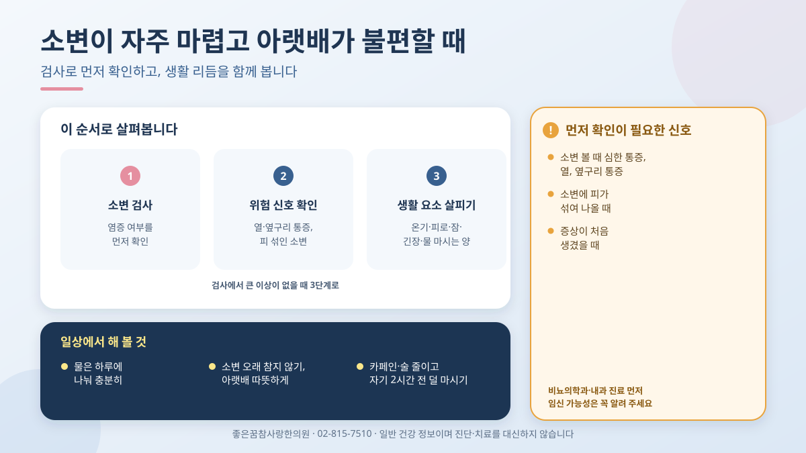

생리통, 생리 전 불편, 주기 변화, 갱년기, 임신 준비와 출산 뒤 회복처럼 여성의 몸에는 달마다, 해마다 바뀌는 리듬이 있습니다. 좋은꿈참사랑한의원은 한방부인과 진료과목에서 불편한 증상과 함께 잠·소화·몸의 온기 같은 생활 리듬을 먼저 여쭙고, 산부인과 확인이 먼저 필요한 신호는 따로 안내합니다.

여성 건강, 쉬운 말로 하면
여성의 몸은 생리 주기, 임신과 출산, 갱년기를 지나며 리듬이 여러 번 바뀝니다. 같은 피로나 통증도 주기의 어느 때인지, 잠과 식사가 어떤지에 따라 모양이 달라질 수 있어 증상 하나만 떼어 보지 않고 생활 전체와 함께 살핍니다.
임신 준비와 출산 뒤 몸 돌보기
난임에는 여성과 남성 양쪽의 여러 요인이 관여합니다. 임신을 준비하는 분께는 생리 주기, 수면, 소화, 체온, 스트레스, 복용 중인 약과 기저질환을 함께 여쭙습니다. 원인을 확인하는 산부인과·비뇨의학과 검사는 함께 받으시길 권합니다.
출산 뒤에는 수면 부족, 아이를 안고 수유하는 반복 자세, 몸의 변화로 손목·허리·어깨가 아프기 쉽습니다. 수유 중이시면 꼭 말씀해 주세요. 한약은 약재별로 수유 중 안전성을 따져 봅니다. 열이 나거나 출혈이 많거나 가슴 통증이 심하면 산부인과 진료가 먼저입니다.
동작구 한의약 난임치료 지원사업 등 보건소 사업은 대상과 신청 방법이 해마다 달라질 수 있어 방문 전 전화로 확인해 주세요.
자주 듣는 이야기
진료실에서 자주 듣는 이야기는 이렇습니다.
- 생리 때마다 아랫배가 차고 아파 일상이 힘들다
- 생리 며칠 전부터 예민해지고 몸이 붓는다
- 체중이 바뀐 뒤로 주기가 불규칙해졌다
- 잠들 무렵 열이 오르고 땀이 나서 자주 깬다
- 출산 뒤 아이를 안다 보니 손목과 허리가 아프다
- 일과 육아를 함께 하며 늘 지쳐 있다
먼저 이렇게 여쭙니다
불편한 증상과 함께 주기와 생활을 일상의 말로 여쭙니다.
- 마지막 생리 시작일과 주기, 양, 통증 정도
- 불편함이 주기의 어느 때에 심해지는지
- 잠, 소화, 손발과 아랫배의 온기
- 임신 가능성과 임신 준비 여부, 복용 중인 약과 호르몬제
- 최근 건강검진이나 산부인과 검사 결과
일상에서 먼저 해 볼 수 있는 것
- 달력이나 앱에 주기와 통증, 기분 변화를 두세 달 적어 보기
- 생리 기간에는 배와 허리를 따뜻하게 하고 찬 음료 줄이기
- 잠드는 시각을 일정하게 맞추고 늦은 밤 화면 보는 시간 줄이기
- 끼니를 거르지 않고 가볍게 걷는 시간 만들기
- 진통제를 먹는다면 먹은 날짜와 양을 함께 적어 두기
한의원에서 함께 살필 수 있는 경우
생리통이나 생리 전 불편이 반복되는 경우, 갱년기 무렵 잠과 열감이 함께 흔들리는 경우, 임신을 준비하며 생활 리듬을 점검하고 싶은 경우에 몸의 온기와 소화, 잠을 함께 살핍니다.
진찰 후 필요하다고 판단될 때 침, 온열, 한약 상담 등을 상태에 맞게 이어서 씁니다. 한약은 진단과 상담을 거친 뒤에 처방하며, 임신 가능성이 있으면 반드시 먼저 알려 주셔야 합니다.
먼저 산부인과 등 확인이 필요한 신호
아래와 같은 경우는 한의원보다 산부인과, 비뇨의학과, 응급실 확인이 먼저입니다. 이미 받고 있는 치료와 약은 임의로 중단하지 않습니다.
- 생리 기간이 아닌데 출혈이 있거나, 폐경 뒤 다시 출혈이 있을 때
- 갑자기 심한 아랫배 통증이나 열이 날 때
- 임신 가능성이 있으면서 복통이나 출혈이 있을 때
- 가슴에 멍울이 만져지거나 유두 분비물이 있을 때
- 소변에 피가 보이거나 열과 옆구리 통증이 함께 있을 때
좋은꿈참사랑한의원 진료는 이렇게 진행됩니다
접수, 상담, 진찰, 치료, 귀가 전 안내 순서로 진행합니다. 생리 중에도 진료를 받을 수 있으며, 그날 컨디션을 미리 알려 주시면 진료 방법을 정하는 데 참고합니다. 다시 오시면 지난번 이야기부터 이어서 여쭙습니다.
상도동·노량진에서
상도동과 노량진, 장승배기 일대에는 일과 육아를 함께 하거나 시험을 준비하며 생활 리듬이 쉽게 흔들리는 분들이 많습니다. 좋은꿈참사랑한의원은 7호선 상도역 3번 출구에서 약 200m 거리(서울 동작구 만양로2길 2 신성빌딩 3층·5층 (상도동))에 있고, 평일은 오후 8시까지, 토·일·공휴일은 오후 3시까지 진료해 퇴근 뒤나 주말에도 들를 수 있습니다.
자주 묻는 질문
생리 중에도 한의원 진료를 받을 수 있나요?
네, 받을 수 있습니다. 생리 시작일과 양, 통증 정도를 미리 알려 주시면 그날 상태에 맞춰 진료 방법을 정합니다.
생리통이 심한데 한의원에서는 무엇을 보나요?
통증이 언제 시작해 얼마나 이어지는지, 아랫배와 손발의 온기, 잠과 소화를 함께 여쭙습니다. 통증이 갑자기 심해졌다면 산부인과 확인을 먼저 권합니다.
갱년기 증상으로 잠을 설치는데 상담할 수 있나요?
네. 열감과 땀이 나는 시간대, 잠에서 깨는 횟수, 기분 변화를 함께 살핍니다. 호르몬제를 드시고 있다면 꼭 알려 주세요.
임신을 준비 중인데 한약을 먹어도 되나요?
한약은 진단과 상담을 거친 뒤에 처방하며, 임신 준비 중이거나 임신 가능성이 있으면 반드시 먼저 알려 주셔야 합니다. 복용 중인 영양제와 약도 함께 말씀해 주세요.
수유 중에 침을 맞아도 되나요?
대부분 가능합니다. 수유 중이라는 것과 지금 몸 상태를 먼저 확인한 뒤 진행합니다.
시험관 시술 중에도 한의원 진료를 받을 수 있나요?
시술 일정과 복용 중인 약을 알려 주시면 함께 진료를 받아도 되는지 신중하게 판단합니다. 담당 산부인과 일정과 지시를 먼저 따라 주세요.
동작구 한의약 난임치료 지원사업은 어디서 확인하나요?
사업 대상과 신청 방법은 보건소 기준에 따르고 해마다 달라질 수 있습니다. 동작구보건소나 한의원에 방문 전 전화(02-815-7510)로 확인해 주세요.
출산 뒤 손목과 허리가 아픈데 언제 가면 되나요?
출산 뒤 몸 상태와 수유 여부, 아픈 동작을 먼저 여쭙습니다. 산후 검진 결과가 있으면 가져오시고, 수유 중이면 꼭 알려 주세요.
방광염처럼 소변이 불편할 때 한의원에 가도 되나요?
소변에 피가 보이거나 열, 옆구리 통증이 있으면 먼저 비뇨의학과나 내과 진료를 받으세요. 검사 뒤에도 반복되는 불편과 생활 리듬은 한의원에서 함께 살필 수 있습니다.
주말에도 여성 진료를 받을 수 있나요?
토요일·일요일·공휴일은 오전 9시 30분부터 오후 3시까지 진료합니다. 방문 전 네이버 예약이나 전화(02-815-7510)로 확인해 주세요.
감수: 좋은꿈참사랑한의원 대표원장 이종호 · 마지막 확인 2026-11-26 · 일반적인 건강 정보이며 진단·치료를 대신하지 않습니다.
여성 건강 글 모아 보기 (23편)

생리통이 심할 때 한의원에서는 무엇을 먼저 묻고, 언제 병원 검사가 필요한가요?
생리통은 통증이 시작되는 때와 세기, 진통제 쓰는 법, 몸의 온기·소화·잠을 두세 주기 기록과 함께 살핍니다. 갑자기 심해진 통증, 생리 때가 아닌 골반 통증, 늘어난 생리량은 산부인과 확인이 먼저입니다.
수정 2026-11-26

갱년기에 몸이 달라질 때 한의원에서는 무엇을 먼저 묻나요?
갱년기에는 열감·식은땀·잠·기분·관절이 한꺼번에 흔들리기 쉬워, 가장 힘든 것부터 차례를 정하고 몸 전체의 리듬에서 살핍니다. 호르몬 치료는 산부인과와 상의하고, 폐경 뒤 출혈은 산부인과 확인이 먼저입니다.
수정 2026-11-26
연말에 바쁘게 지낸 뒤 생리가 늦어질 때는 어떻게 살피나요?
야근과 모임으로 잠과 식사가 흐트러진 달에는 생리 주기가 늦어지는 분이 있어, 임신 가능성과 최근 생활의 변화를 먼저 묻고 주기 기록과 잠부터 함께 정리합니다.
수정 2026-11-25

임신을 준비하는 부부가 둘 다 야근이 잦을 때 생활 리듬은 어떻게 맞추나요?
임신을 준비하는 부부가 둘 다 야근이 잦다면 일주일에 두세 번은 같은 시각에 잠자리에 들고 저녁은 늦어도 밤 9시 전에 간단히 먹는 것부터 맞춰 보시기를 권하며, 임신 관련 검사와 진단은 산부인과 진료가 함께 필요합니다.
수정 2026-11-24

출산 후 유모차를 밀고 언덕길을 다니면 골반이 묵직하고 쉽게 지칠 때는 어떻게 살피나요?
출산 후 몸이 회복되는 시기에 유모차를 밀고 오르막을 자주 오르면 골반과 허리에 부담이 쌓이고 쉽게 지칠 수 있어, 출산 후 시기와 잠, 불편한 동작을 먼저 묻고 무리를 줄이는 방법을 함께 정리합니다.
수정 2026-11-24

출산 뒤 유모차를 밀고 언덕길을 오르내릴 때 손목과 허리가 뻐근하면 어떻게 하나요?
출산 뒤 유모차로 언덕길을 오르내리면 오르막에서는 허리를 숙여 밀고 내리막에서는 손목으로 버티게 되어 손목과 허리에 부담이 쌓일 수 있습니다. 산책 길과 손잡이 높이, 아기를 안는 자세를 먼저 여쭙고 함께 조정합니다.
수정 2026-11-24
출산 뒤 마음이 가라앉고 눈물이 날 때는 어떻게 살피나요?
출산 뒤 마음이 가라앉고 눈물이 나는 것은 흔한 반응일 수 있어 잠과 도움 받을 사람을 함께 묻고, 2주 넘게 이어지거나 아기를 돌보기 어려우면 산부인과·정신건강의학과 진료를, 스스로를 해치거나 아기를 해칠 것 같은 생각이 들면 지체 없이 109나 가까운 응급실을 권합니다.
수정 2026-11-26

생리통이 심한 날 출근길 지하철에서 서서 가기 힘들 때는 어떻게 준비하나요?
생리 첫날 아랫배 통증과 어지럼이 출퇴근길과 겹치면 서서 가기 힘들 수 있어, 통증이 심한 날과 시간, 진통제 복용 습관, 생리량을 먼저 묻고 출근 전에 미리 준비할 수 있는 방법을 함께 정리합니다.
수정 2026-11-24

갱년기 무렵 갑자기 가슴이 두근거릴 때는 어떻게 살피나요?
갱년기 무렵 갑자기 가슴이 두근거린다면 먼저 내과나 심장 검사로 심장 문제를 확인하는 것이 순서이며, 생활에서는 두근거림이 생긴 시각과 상황을 기록하고 오후 카페인을 줄이며 천천히 내쉬는 호흡을 해 보시기를 권합니다.
수정 2026-11-24

갱년기 무렵 눈·입·피부가 부쩍 건조해졌을 때는 무엇을 살피나요?
갱년기 무렵 눈·입·피부가 부쩍 건조해졌다면 물을 하루 여러 번 나눠 마시고 실내 습도를 맞추며 샤워 뒤 바로 보습하는 것부터 해 보고, 복용 중인 약과 잠 상태도 함께 살펴보시기를 권합니다.
수정 2026-11-24

일과 육아를 함께 하며 늘 지쳐 있을 때는 무엇부터 살피나요?
일과 육아를 함께 하며 늘 지쳐 있다면 하루 일과와 잠, 식사, 몸의 아픈 곳을 먼저 묻고 작게 쉴 틈을 함께 찾으며, 빈혈이나 갑상선처럼 확인이 필요한 원인이 없는지도 살핍니다.
수정 2026-11-24

생리 중에도 한의원 진료를 받을 수 있나요?
생리 기간에도 한의원 진료를 받을 수 있으며, 생리 시작일과 양, 통증 정도를 미리 알려 주시면 그날 컨디션에 맞춰 진료 방법과 자세를 정하는 데 도움이 됩니다.
수정 2026-11-25

생리 전 일주일마다 예민해지고 짜증이 늘 때는 어떻게 살피나요?
생리 전 일주일마다 예민해지고 짜증이 는다면 증상이 시작되는 시점과 생리 뒤 사라지는지, 붓기·단 음식 당김·잠의 변화를 두세 달 기록해 함께 보고, 일상이 무너질 정도면 부인과 상담을 함께 권합니다.
수정 2026-11-25

임신 중이거나 임신 가능성이 있을 때는 한의원에 무엇을 알려야 하나요?
임신 중이거나 임신 가능성이 있다면 접수와 진료 시작 때 먼저 알려 주셔야 하며, 마지막 생리 시작일과 복용 중인 약, 산부인과에서 들은 주의 사항을 함께 말씀해 주시면 진료 방법을 안전하게 정할 수 있습니다.
수정 2026-11-25

임신을 준비하는 부부는 생활에서 무엇부터 함께 점검하나요?
임신을 준비하는 부부는 두 사람의 잠과 근무 형태, 식사, 음주·흡연, 복용 중인 약과 검사 결과를 함께 점검하는 것부터 시작하며, 1년(35세 이상은 6개월) 넘게 임신이 되지 않으면 검사를 함께 권합니다.
수정 2026-11-24

출산 뒤 아기를 안다가 손목과 손가락이 아플 때는 어떻게 하나요?
출산 뒤 아기를 안고 수유하며 손목과 엄지 쪽이 아프면 아픈 동작과 시간대, 안는 자세를 먼저 묻고 수유 중인지 확인한 뒤 방법을 정하며, 출산 뒤 기분이 깊이 가라앉는 날이 이어지면 함께 살핍니다.
수정 2026-11-24

폐경 뒤 뼈 건강은 생활에서 무엇을 챙기면 좋을까요?
폐경 뒤에는 뼈가 약해지기 쉬워 골밀도 검사와 칼슘·비타민 D 섭취, 체중을 싣는 운동, 넘어짐 예방을 챙기며 키가 줄거나 넘어진 뒤 허리가 아프면 병원 검사를 먼저 권하고 골다공증 약은 임의로 중단하지 않습니다.
수정 2026-11-26

갱년기에 밤마다 땀에 젖어 깨는 날이 많을 때는 어떻게 하나요?
갱년기에 밤마다 땀에 젖어 깬다면 땀이 나는 시각과 횟수, 침실 환경, 낮의 열감과 기분 변화를 먼저 묻고 잠과 열감을 함께 살피며, 열이나 체중 감소가 있으면 다른 원인 확인을 먼저 안내합니다.
수정 2026-11-25

체중이 갑자기 늘거나 줄고 나서 생리 주기가 불규칙해졌을 때는 어떻게 하나요?
짧은 기간에 체중이 크게 늘거나 준 뒤 생리 주기가 흔들리면 먼저 임신 가능성을 확인하고, 체중 변화의 속도와 식사·운동·잠·스트레스를 살피며, 석 달 이상 생리가 없으면 부인과 검사를 함께 권합니다.
수정 2026-11-25

소변이 자주 마렵고 아랫배가 불편한 느낌이 자꾸 반복될 때는 어떻게 하나요?
잔뇨감과 빈뇨, 아랫배 불편이 반복되면 먼저 소변 검사로 염증 여부를 확인하는 것이 우선이며, 검사에서 큰 이상이 없는데도 불편이 이어지면 몸의 온기와 피로, 잠, 긴장을 함께 살핍니다.
수정 2026-11-25

생리 때마다 아랫배가 차고 묵직할 때는 무엇을 먼저 살피나요?
생리 때마다 아랫배가 차고 묵직하면 통증이 며칠째 가장 심한지, 따뜻하게 하면 편해지는지, 생리량과 손발의 온기를 먼저 묻고, 해마다 심해지는 생리통은 부인과 검사를 함께 권합니다.
수정 2026-11-25
얼굴이 달아오르고 땀이 갑자기 날 때는 어떤 점을 살펴보나요?
낮에 갑자기 얼굴이 달아오르고 땀이 나면 나이와 생리 주기 변화, 잠, 카페인과 스트레스를 함께 여쭙고, 체중 감소나 생리가 아닌 출혈은 병원 검사를, 가슴 통증이나 심한 두근거림은 가까운 응급실을 먼저 권합니다.
수정 2026-11-26

겨울에 손발이 유난히 찰 때는 한의원에서 무엇을 살펴보나요?
겨울에 손발이 유난히 차면 체온 변화와 잠, 식사, 생리 주기를 함께 여쭙고 생활 리듬부터 살피며, 손가락 색이 하얗게 또는 파랗게 변하거나 한쪽만 차고 저리면 병원 확인을 먼저 권합니다.
수정 2026-11-26